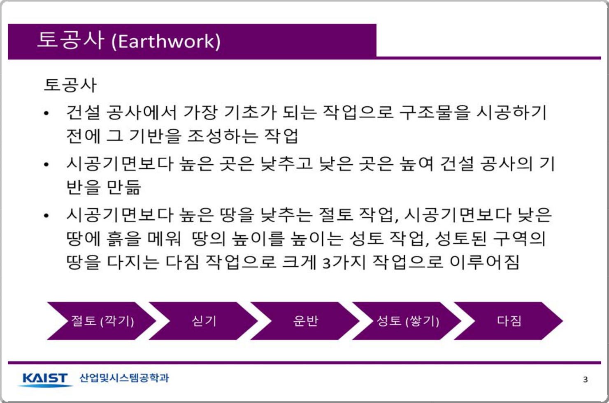

Korea Advanced Institute of Science and Technology2018#067학습·RL·IL·VLA학술 발표자료
강화학습을 이용한 다양한 환경에서의 절토 공정 계획
강화학습을 이용한 다양한 환경에서의 절토 공정 계획
지민기, 우성철, 박진규, 문일철 · 2018 춘계공동학술대회(한국경영과학회/대한산업공학회/한국시뮬레이션학회), 2018-04-04~07, 호텔현대 경주
한줄 요약 — 작업자 직관에 좌우되던 절토 순서를 국소 상태 MDP와 표형 Q-learning으로 치환하고 최소 5% 탐색을 유지하는 ε-greedy 정책을 학습해, 훈련 격자보다 훨씬 큰 정사각 환경에도 재학습 없이 적용한 KAIST 발표자료로 후속 Double DQN 연구의 상태 축소와 환경 전이 아이디어를 선행적으로 보여준다.
1.연구 배경 및 동기
숙련자 직관에 의존하는 절토 순서를 재사용 가능한 정책으로
발표자료는 토공사를 구조물 시공 전 지반을 조성하는 기초 공정으로 정의하며 절토, 쌓기, 운반, 성토와 다짐이 순차적으로 연결된다고 설명한다. 토공은 대부분의 건설과정에 포함되고 물량이 많으며 반복적이지만 실제 효율과 생산성은 작업자 직관과 숙련도에 크게 좌우된다. 같은 토량이라도 장비가 어느 셀을 먼저 파고 어떤 경로로 이동하는지에 따라 운반거리와 공사비가 달라지므로 인공지능이 최적 의사결정을 학습해 절토 공정계획을 자동 생성하는 것이 연구 목표다.
기존 토공계획은 절·성토량 계산, 최소 운반거리와 토량 배분, 작업자 패턴 기반 구역 분할과 장비 협업 규칙을 중심으로 발전했다. 저자들은 고정 수리모형보다 환경과 상호작용하며 정책을 개선하는 강화학습에 주목한다. 특히 전체 격자를 상태로 넣지 않고 굴삭기 주변의 제한된 토양정보를 사용해 작은 환경에서 배운 정책을 100×100 이상 대형 환경으로 옮긴다. 실제 버킷 궤적이 아니라 격자 수준 절토 순서를 계획하는 초기 연구 데모다.

원문 발표자료 · PDF p.2 — 캡션이 없는 발표자료의 의미 있는 원문 시각자료
선행 연구의 한계
토공 순서와 생산성이 작업자 숙련에 크게 의존한다.
토량 배분 중심 방법은 장비의 시점별 행동을 재사용 가능한 정책으로 제공하지 않는다.
전체 격자 상태는 환경 크기와 함께 폭증한다.
절대 위치 표현은 더 큰 현장에 정책을 직접 적용하기 어렵다.
이 연구의 기여
이동 네 가지와 절토 한 가지를 갖는 단일 굴삭기 격자 MDP를 구성했다.
주변 5×5 토양분포와 네 방향 단서를 결합한 국소 상태를 만들었다.
최소 5% 탐색을 유지하는 ε-greedy 정책으로 학습 후반의 상태 다양성을 보전했다.
크기 15 정책을 100×100, 200×200, 300×300 환경에 적용해 최적 step을 보고했다.
2.방법론 및 시스템 구성
환경은 통로와 절토 대상 땅으로 구성된 2차원 격자이며 에이전트는 굴삭기 한 대다. 굴삭기는 매 tick 상하좌우 이동 또는 땅파기 중 하나를 고른다. 환경 밖 이동이나 땅이 없는 셀의 절토처럼 불가능한 행동은 실행되지 않고 no-op으로 처리된다. 시작 시 굴삭기는 통로에 있고 모든 대상 셀이 땅으로 채워지며, 모든 땅이 흙으로 바뀌면 종료한다.
상태는 전체 지도 대신 굴삭기 주변 5×5 영역의 땅 분포와 상·하·우·좌 중 땅이 가장 많이 남은 방향 정보로 구성된다. 이 표현은 절대 좌표를 직접 입력하지 않아 환경 크기가 달라도 같은 Q표를 호출할 수 있다. 행동은 ε-greedy로 선택하며, ε을 에피소드 수로 계속 나누면 후반 탐색이 사라지는 문제를 막기 위해 ε=max(0.05, ε0/episode)로 최소 5% 탐색을 남긴다.
처리 파이프라인
1
절토 격자 초기화
통로와 중앙 토양영역을 배치하고 굴삭기를 통로에서 시작시킨다.
2
국소 관측 구성
주변 5×5 토양분포와 토양이 가장 많은 상하좌우 방향의 one-hot 단서를 결합한다.
3
행동과 전이
상하좌우 이동과 절토 중 하나를 선택하며 불가능한 행동은 상태를 바꾸지 않는다.
4
표형 Q-learning
상태·행동·보상·다음 상태로 Q값을 갱신하고 최소 탐색률 0.05를 둔 ε-greedy로 1,500에피소드를 학습한다.
5
대형 환경 전이
크기 15에서 얻은 정책을 재학습 없이 100×100, 200×200, 300×300 정사각 환경에 적용한다.
굴삭기의 절대 위치나 전체 격자를 쓰지 않고 주변 5×5의 땅 분포와 잔여 토양이 많은 방향을 관측해 눈앞의 절토 가능성과 장기 이동방향을 함께 표현한다.
크기 15에서 학습한 Q표를 100×100 이상의 환경에도 적용할 수 있지만 서로 다른 전역 위치가 같은 국소 패턴으로 축약되는 상태 별칭 문제가 있고 정사각형 유사 형상에서만 최적성이 확인됐다.
5×5 토양정보
상하좌우 방향 단서
절대 좌표와 지도 크기 배제
최소 5% 탐색을 유지하는 Q-learning
에피소드 수에 따라 ε을 계속 줄이면 학습 후반에 다양한 상태를 얻지 못한다. ε의 하한을 0.05로 두어 최적 행동을 주로 선택하면서도 낯선 국소 패턴을 탐색한다.
5회 반복에서 단순 감소형 탐색은 1.04±0.03, 하한 방식은 1.02±0.02의 최적 step 대비 비율을 보였다. 최적 경로 167 step 조건에서 두 방식 모두 근최적이지만 하한 방식의 평균과 산포가 작다.
성공 절토 +1, 기타 0
할인율 0.7
1,500에피소드
초대형 정사각 격자로의 직접 전이
훈련 환경은 크기 15지만 시험 환경은 100×100부터 300×300까지 확장된다. 국소 상태가 같은 규칙으로 계산되므로 Q표 차원을 바꾸거나 다시 학습하지 않는다.
세 환경의 step은 모두 optimal로 표시됐다. 이는 지역 패턴이 반복되는 정사각형 토양영역의 결과이며 장애물, 복수 토양섬과 비정형 경계까지 일반화된다는 근거는 아니다.
100×100: 19,603 step
200×200: 79,203 step
300×300: 178,803 step
4.실험 결과
실험 환경·장비·데이터
단일 굴삭기의 2차원 격자
훈련 크기 15: 통로 3·중앙 토양 9·초기 토량 1
절토 +1·기타 0·할인율 0.7
100×100·200×200·300×300 시험
실험 프로토콜
표형 Q-learning을 1,500에피소드 반복한다.
감소형 ε과 최소 0.05 하한 방식을 비교한다.
최적 167 step 대비 실행 step 비율을 5회 집계한다.
학습 정책으로 세 대형 환경의 완료 step을 계산한다.
비교 기준
ε=ε0/episode
ε=max(0.05, ε0/episode)
환경별 최적 step
평가 지표
최적 step 대비 비율
5회 평균과 표준편차
대형 환경 완료 step
미학습 크기 최적 경로 여부
핵심 결과 해석
훈련 환경에서 기본 ε-greedy의 최적 step 대비 실행 비율은 1.04±0.03, ε을 최소 0.05로 유지한 방식은 1.02±0.02였다. 표에 명시된 최적 경로는 167 step이고 각 조건은 5회 반복됐다. 두 정책 모두 근최적이지만 탐색 하한 방식이 평균 초과량과 산포가 작아 다양한 상태를 계속 얻으면서 최적에 가까운 경로를 세울 수 있음을 보인다.
학습된 에이전트는 100×100에서 19,603 step, 200×200에서 79,203 step, 300×300에서 178,803 step으로 절토를 완료했고 발표자료는 세 결과를 모두 optimal로 표시한다. 훈련 크기 15보다 훨씬 큰 환경에서도 재학습 없이 경로가 생성됐지만 시험 토양이 훈련 환경과 유사한 정사각형이라는 조건이 있으므로 임의 형상 일반화로 확대 해석해서는 안 된다.
정량 결과
평가 항목
정량 결과
조건·맥락
원문 근거
훈련 환경과 반복 수
크기 15, 1,500에피소드
통로 3·중앙 땅 9·초기 토량 1
PDF p.10
보상과 할인율
절토 +1, 기타 0, γ=0.7
표형 Q-learning 설정
PDF p.10
기본 ε-greedy 경로 비율
1.04±0.03
최적 167 step 대비, 5회 반복
PDF p.10
최소 5% 탐색 경로 비율
1.02±0.02
최적 167 step 대비, 5회 반복
PDF p.10
100×100 완료 경로
19,603 step, optimal
정사각형 토양분포
PDF p.11
200×200 완료 경로
79,203 step, optimal
재학습 없는 환경 확장
PDF p.11
300×300 완료 경로
178,803 step, optimal
가장 큰 시험 환경
PDF p.11
실패 사례와 경계조건
탐색률이 계속 감소하면 후반 상태 다양성이 사라진다.
불가능 행동은 no-op이어서 잘못된 정책이 생산성 없는 step을 누적한다.
대형 환경 최적성은 정사각형 유사 형상에 한정된다.
실제 유압·토양력·충돌 실패는 포함되지 않았다.
5.한계 및 향후 연구
현재 한계
단일 굴삭기의 2차원 격자 절토만 모델링한다.
토질·깊이·경사·장애물·장비 자세를 상태에 넣지 않는다.
대형 시험은 정사각형 토양영역에 한정된다.
표형 Q-learning은 상태특징 증가 시 다시 폭증한다.
계산시간·전체 학습곡선·실차 시험이 없다.
향후 연구
신경망 Q함수로 더 큰 상태공간을 처리한다.
비정형 토양과 복수 작업구역에서 검증한다.
트럭·다짐기 협업계획으로 확장한다.
격자 step을 작업시간·연료·생산량과 실차 궤적에 연결한다.
6.한마디로 정리
핵심 방법은?
5×5 국소 상태와 네 방향 단서, 최소 5% 탐색의 표형 Q-learning을 사용했다.
핵심 결과는?
크기 15 정책이 100×100~300×300 정사각 환경에서 optimal로 표시된 경로를 만들었다.
한계는?
정사각형·단일 장비 시뮬레이션이며 비정형 지형과 실제 동역학은 미검증이다.
#학습·RL·IL·VLA#작업·궤적계획#강화학습
나의 의견 / 우리 연구와의 연관성
후속 ‘Route Generation’과 국소 상태·단일 굴삭기·환경 전이 아이디어가 겹친다. 본 발표는 표형 Q-learning과 초대형 정사각 격자 step에 초점을 두고, 후속 논문은 Double DQN·결손 토양·직사각형 분할을 추가한다.
버킷 궤적 연구는 관절 변화량과 힘을 다루지만 이 자료의 행동은 격자 이동과 절토 명령이다. 현장에서는 본 정책이 작업 셀과 순서를 고르고 TD3·DMP·MPC가 셀 내부의 실제 동작을 수행하는 두 계층으로 결합할 수 있다.
국소 상태를 elevation map의 고정 관측창으로 확장할 수 있다.
실장비 탐색에는 안전필터가 필수다.
비정형 현장에는 구역 분할과 전역 탐색기가 필요하다.
고유 초점은 표형 Q-learning의 대형 격자 전이와 탐색률 비교다.
7.전체 그림·표
본문 핵심 위치에 배치하지 않은 원문 Figure와 Table을 원문 페이지 순서로 수록한다.